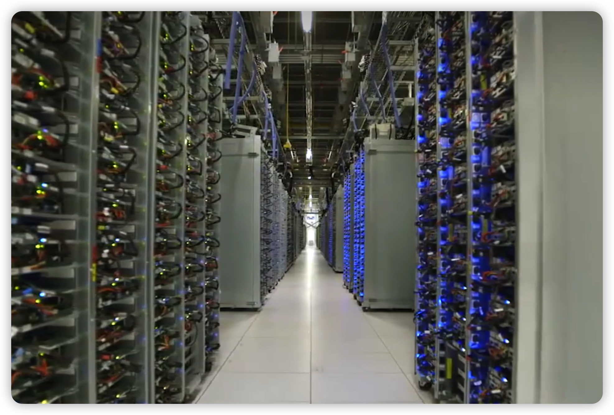

大数据的背景#
1. 拥挤的晶体管：摩尔定律#

{kind=link}
{kind=link}
摩尔定律是指集成电路上的晶体管数量每两年翻一番，成本几乎不变。 英特尔联合创始人戈登·摩尔 (Gordon Moore) 在 1965 年发表的原始论文中预测，未来十年晶体管数量将每年翻一番。 十年后，即 1975 年，摩尔将这一预测修正为每两年翻一番。基于新兴趋势的外推，该定律近 60 年来一直是半导体行业的指导原则。

摩尔定律并不是一条科学定律（因为它并非自然现象）。摩尔本人也承认他不喜欢这个称呼，因为它并不是他论文中使用的原始语言。相反，摩尔定律是未来发展的预测，其持续准确性依赖于创新和技术进步。
数十年来，半导体行业持续创新，在更小的芯片上塞入越来越多的晶体管，以维持摩尔定律的步伐。英特尔的工程师和科学家不断面对并克服了当芯片上的特征缩小到原子尺寸时由物理定律带来的挑战。上面时间线中的例子只是开始。在英特尔20A和英特尔18A引入 RibbonFET 和 PowerVia 之后，新的后续工艺节点已经在开发中，将在功耗、性能和密度方面带来进一步提升。
多年来，许多人预测了摩尔定律的终结——由于当前方法的限制，创新将不可避免地结束：你可以把东西做得越来越小，直到你做不到为止。然后，你必须以其他方式进行创新。随着先进封装技术和新型材料的出现，摩尔定律的步伐仍在继续。（摩尔本人在2023年3月24日在夏威夷的家中去世）
讨论：芯片的未来#
现代芯片的尺寸已经非常小，但它们包含的晶体管数量却非常庞大。例如，苹果 A16 仿生芯片的尺寸只有 5.42 平方毫米，但却包含了 160 亿个晶体管。这相当于每平方毫米上包含约 30 亿个晶体管。芯片的制造过程非常复杂，需要经过数百道工序。其中，最关键的一步是光刻，它需要使用光学技术将电路图案精确地复制到硅晶圆上。芯片的功耗是衡量芯片性能的重要指标之一。随着芯片的复杂度不断提高，功耗也越来越大。为了降低功耗，芯片制造商们不断开发新的技术，例如 FinFET 晶体管和 3D 堆叠技术。
观看文末提供的有关光刻机的视频
小组内部讨论
凝练观点（论点）和理由（论据），并提交分享
2. 一群“地下工作者”：谷歌数据中心#
1.1 谷歌数据中心#
{kind=link}
纪录片《Inside Google’s Data Centers》链接
谷歌数据中心是谷歌公司的核心基础设施，用于存储、处理和管理海量数据。分布在全球，规模庞大，拥有先进的技术和创新设计。它们支撑着谷歌的各项服务，包括搜索、电子邮件和云计算。谷歌数据中心注重可持续性和安全性，采用可再生能源和严格的安全措施。它们是谷歌为用户提供高效、可靠服务的关键基础。
这些数据中心通常位于偏远地区，远离城市喧嚣，它们需要大量的电力和冷却系统才能正常运行。
3. 正在涌动的AI浪潮：AIGC#
ChatGPT是由OpenAI开发的大型语言模型聊天机器人，于2022年11月首次亮相。它基于GPT-3.5模型，并经过大量对话数据训练，能够生成类似人类的对话文本。OpenAI是一家非营利性人工智能研究公司，致力于开发安全和有益的人工智能，它由Elon Musk、Sam Altman、Ilya Sutskever等知名人士于2015年共同创立。OpenAI已经开发出多个知名的人工智能项目，包括GPT-3、GPT-4、DALL-E 2等。

其他大语言模型，例如Llama 2、Gemnini和Mistral等大语言模型。体验开源大模型，可以：
本地版：https://github.com/ollama/ollama
在线: https://chat.tune.app
参考#
Moore’s Law: The past, present and future of Gordon Moore’s golden rule for the semiconductor industry: https://www.intel.com/content/www/us/en/newsroom/resources/moores-law.html#gs.5afd3j
Keeping Moore’s Law alive: What it’s like to work at Intel: https://www.youtube.com/watch?v=hITCzwYod5g
Evolution of Transistor Innovation | Intel Technology: https://www.youtube.com/watch?v=Z7M8etXUEUU
About Google Data Centers: https://www.google.com/about/datacenters/
OpenAI官网：https://openai.com/blog/chatgpt/
光刻机视频：在家里装一台光刻机，要花几个亿？
光刻机科普：https://www.bilibili.com/video/BV1BT411h7V7/?spm_id_from=333.337.search-card.all.click&vd_source=d514eddb5154d21af9b5388f2d0b1ebd
光刻机的一秒：https://www.bilibili.com/video/BV1zT4y1J7cD/?spm_id_from=333.337.search-card.all.click&vd_source=d514eddb5154d21af9b5388f2d0b1ebd